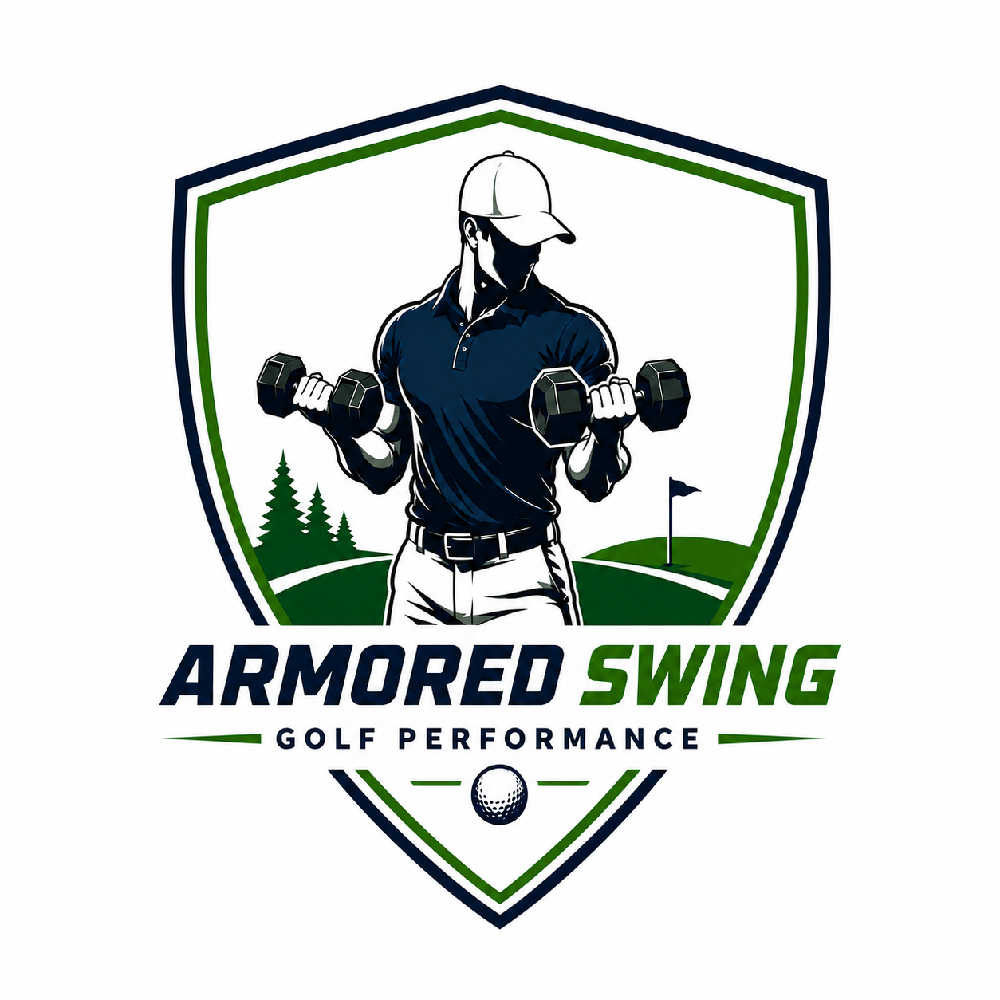

Vasyli Full-Length Orthotic
Biomechanical full-length orthotic that supports the arch and helps control overpronation for a more stable base. Select your size:

Armored Swing Book assessmentProducts
A curated list of tools and equipment that pair well with your assessment and home program. Purchases are made securely on Amazon.
Biomechanical full-length orthotic that supports the arch and helps control overpronation for a more stable base. Select your size:
Set of resistance loop bands for warm-ups, activation drills, and the mobility and strength work in your home program.
View on AmazonLooped power bands for mobility, stretching, and progressive strength work — useful for assisted movements and higher-resistance training.
View on AmazonElastic kinesiology tape for light support and recovery around muscles and joints during training and play.
View on AmazonInstrument-assisted soft tissue mobilization (IASTM) tool for at-home soft tissue work, recovery, and myofascial release.
View on AmazonFirm foam roller for myofascial release, mobility work, and recovery between rounds and training sessions. Select your length:
Hand therapy putty for grip, wrist, and forearm strengthening and recovery. Choose your resistance level on Amazon.
View on AmazonInflatable stability ball for core, balance, and mobility work. Choose your size on Amazon.
View on AmazonProfessional non-latex resistance band for progressive strengthening, rehab, and mobility. Choose your resistance level on Amazon.
View on AmazonAs an Amazon Associate, Armored Swing earns from qualifying purchases. This does not affect the price you pay.